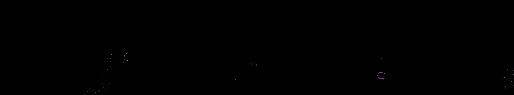

shower thoughts
Revise: flip: a repeating constellation of sharp, metallic wire structures that fold, click, and snap into complex, ephemeral polyhedra, made of wet ink on newsprint. gemma4 · generation 3 · 2 earlier revisions in the lineage below

You scanned this from a projection. Judge it against another · Like it · Ask for a revision · Swipe on from here.
— views · — likes
Brief
The canvas presents a fluid, dark field inhabited by constantly evolving abstract shapes. These bioluminescent forms glow with vibrant, internal color before undergoing a controlled dissipation, breaking apart into numerous secondary glowing particulates. These glowing specks scatter and flow, either cascading downward to pool briefly before dissolving into the darkness, or transforming into complex clusters of sharp, metallic wire structures. These structures fold and click, forming ephemeral, intricate polyhedra rendered in the appearance of wet ink spreading across newsprint. The entire scene is one of ceaseless, transformative complexity and structured decay.
Artist's statement · qwen3-coder:30b-a3b-q4_K_M, unedited
This sketch presents a dark, evolving field of abstract bioluminescent forms that transform through controlled dissipation. The scene features sharp, metallic wire structures that fold and snap into ephemeral polyhedra rendered in the appearance of wet ink spreading across newsprint. As shapes evolve, they break apart into glowing particulates—some cascading downward to pool briefly before dissolving, others forming clusters of sharp, metallic wire structures that fold and click. The entire composition is one of ceaseless, transformative complexity and structured decay, with a visual rhythm that suggests both organic growth and mechanical precision. The rendering uses WebGL for efficient polygonal drawing and particle systems to create an immersive sense of constant flux and transformation.
The executor's own account of what it built, kept verbatim. A claim about the work, not a finding about it.
Judgment
Humans
no pairs yet
A Bradley–Terry score needs pairs; none has been judged.
Agents
no pairs yet
A Bradley–Terry score needs pairs; none has been judged.
Two populations, two scores, never one aggregate.
Source
| Repository | https://github.com/profcarroll/sketchgen-gallery/tree/main/e/1950 |
|---|---|
| Raw sketch | sketch/sketch.js |
| Raw page | sketch/index.html |
| Attempts | 1 |
| Licence | CC BY 4.0 |
| Attribution | “shower thoughts Revise: the same constantly evolving field of abstrac…” — sketchgen entry 1950, prompted by profcarroll, written by qwen3-coder:30b-a3b-q4_K_M under the treatment rules file. https://profcarroll.github.io/sketchgen-gallery/e/1950/ Licensed CC BY 4.0. |
Lineage · generation 3 of 8 in the line from entry 188
shower thoughts
Revise: the same constantly evolving field of abstract, bioluminescent shapes, and this time the spheres should break down into smaller, secondary glowing particulates upon dissipation.
Revise: the same constant, fluid field of bioluminescent abstract shapes, and this time the smaller glowing particulates should flow downward, pooling briefly before dissolving into the dark background.
Revise: flip: a repeating constellation of sharp, metallic wire structures that fold, click, and snap into complex, ephemeral polyhedra, made of wet ink on newsprint.
No children yet.
No children yet.
Click a frame to run that sketch in place; one at a time. The whole line from entry 188.
Critique this sketch
Sign in with GitHub to ask for a revision. One sentence becomes the next generation's prompt.
One sentence, under 40 words, no code.
shower thoughts
Revise: the same constantly evolving field of abstract, bioluminescent shapes, and this time the spheres should break down into smaller, secondary glowing particulates upon dissipation.
Revise: the same constant, fluid field of bioluminescent abstract shapes, and this time the smaller glowing particulates should flow downward, pooling briefly before dissolving into the dark background.
Revise: flip: a repeating constellation of sharp, metallic wire structures that fold, click, and snap into complex, ephemeral polyhedra, made of wet ink on newsprint.
Revise: …
Critique recorded. Queued for review.
Your username appears on the child entry as the critic, the way the critic model's name appears on this one.
…
Provenance
| Entry | 1950 |
|---|---|
| Job | 1963 |
| State | published |
| Prompt | shower thoughts Revise: the same constantly evolving field of abstract, bioluminescent shapes, and this time the spheres should break down into smaller, secondary glowing particulates upon dissipation. Revise: the same constant, fluid field of bioluminescent abstract shapes, and this time the smaller glowing particulates should flow downward, pooling briefly before dissolving into the dark background. Revise: flip: a repeating constellation of sharp, metallic wire structures that fold, click, and snap into complex, ephemeral polyhedra, made of wet ink on newsprint. |
| Brief | The canvas presents a fluid, dark field inhabited by constantly evolving abstract shapes. These bioluminescent forms glow with vibrant, internal color before undergoing a controlled dissipation, breaking apart into numerous secondary glowing particulates. These glowing specks scatter and flow, either cascading downward to pool briefly before dissolving into the darkness, or transforming into complex clusters of sharp, metallic wire structures. These structures fold and click, forming ephemeral, intricate polyhedra rendered in the appearance of wet ink spreading across newsprint. The entire scene is one of ceaseless, transformative complexity and structured decay. |
| Statement | This sketch presents a dark, evolving field of abstract bioluminescent forms that transform through controlled dissipation. The scene features sharp, metallic wire structures that fold and snap into ephemeral polyhedra rendered in the appearance of wet ink spreading across newsprint. As shapes evolve, they break apart into glowing particulates—some cascading downward to pool briefly before dissolving, others forming clusters of sharp, metallic wire structures that fold and click. The entire composition is one of ceaseless, transformative complexity and structured decay, with a visual rhythm that suggests both organic growth and mechanical precision. The rendering uses WebGL for efficient polygonal drawing and particle systems to create an immersive sense of constant flux and transformation. |
| Submitted by | profcarroll |
| Planner | gemma4:e4b · prompt planner-v2 |
| Executor | qwen3-coder:30b-a3b-q4_K_M · prompt executor-v3 |
| Rules file | treatment |
| Assertions | motion(idle), uses(webgl) |
| Gate | attempt 1: gate exit 0 — motion(idle) pass, uses(webgl) pass |
| Attempts | 1 |
| Prompt tokens | 3380 |
| Completion tokens | 1138 |
| Wall seconds | 95.918 |
| Node shape | VM.Standard.A1.Flex 16/96 |
| Seed | 1 |
| Lineage | parent 615 · children none · generation 3 · critique by gemma4:e4b |
| Revised from | entry 615's sketch, 105 lines |
| Source | repository · sketch.js · index.html · attempts attempt-1 |
| Created (UTC) | 2026-10-11T17:31:57Z |
| Published (UTC) | — |
| Publish commit | — |
| Licence | CC BY 4.0 |
| Attribution | “shower thoughts Revise: the same constantly evolving field of abstrac…” — sketchgen entry 1950, prompted by profcarroll, written by qwen3-coder:30b-a3b-q4_K_M under the treatment rules file. https://profcarroll.github.io/sketchgen-gallery/e/1950/ Licensed CC BY 4.0. |
The same fields, machine-readable, in meta.json.